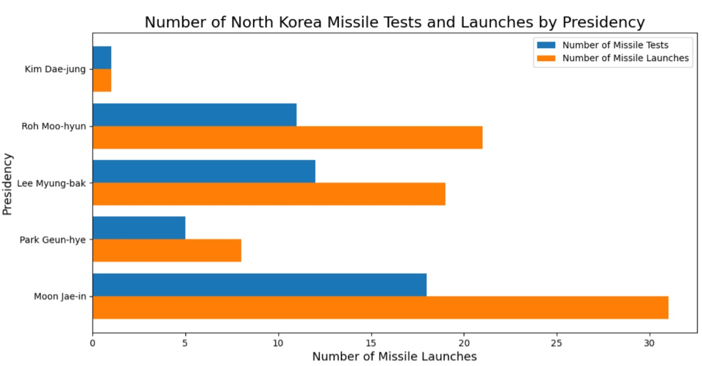
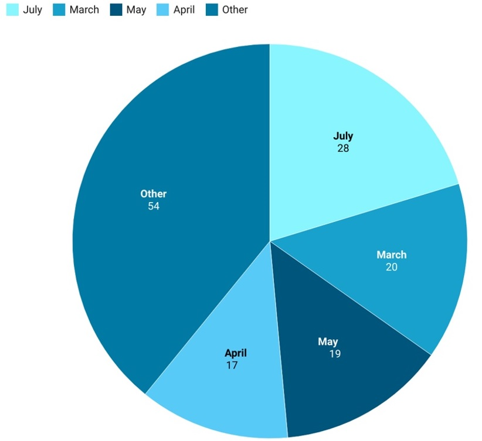

NK political statements: understanding missile tests as diplomatic commentary
Launching a missile test has a practical purpose for North Korea as it tests its missile technology (trajectory, speed, accuracy, etc.). How do North Korean leaders choose when and to where to launch a missile? Is the North Korean regime sending a specific signal in choosing those launch dates?
Launch History by ROK and US presidency

Launch History by month
Data analysis by month demonstrates that U.S.-ROK joint military exercises(Foal Eagle and Key Resolve) which take place in spring have correlation with North Korea's missile launches.

Diplomatic Engagement with North Korea and Missile Launches
Multilateral and bilateral diplomatic engagements between North Korea appear to have correlation with decrease in the number of North Korea's missile launches.